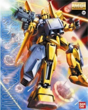
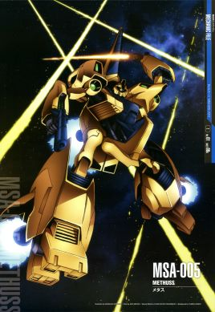
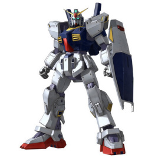
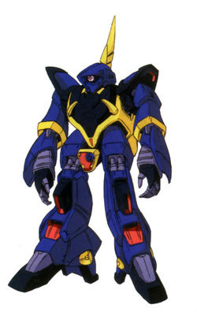

奥古和阿纳海姆公司共同制定的“Z计划”所开发制造的可变形MS（TMS）。卡缪·维丹以Z高达代替了RX-178 高达MK II作为自己的专用机。由于自身新人类能力和新机体强大性能，他在奥古反提坦斯一系列战役中取得了辉煌的战绩。 本机是奥古和阿纳海姆公司共同制定的“Z计划”所开发制造的可变形MS（TMS）。最初建造的3台原型机为MSZ-006-X1、MSZ-006-X2和MSZ-006-X3。这些机体的结构设计为可以变形，但是遇到了不可克服的金属疲劳问题足以导致机身解体。这个问题后来由于得到了提坦斯的高达MK-2，参考了其可变式框架以及为奥古作战的新人类驾驶员卡缪·维丹的纠正而解决了。MSZ-006成为UC历史上第一批可以变形的MS，可以从MS形态转为MA“waverider（冲浪者）”形态，由此获得单机突入大气圈的能力，潜在能力超过当时任何MS。 卡缪·维丹以Z高达代替了RX-178高达MK II作为自己的专用机。由于自身新人类能力和新机体强大性能，他在奥古反提坦斯的一系列战役中取得了辉煌战绩。被Z高达打败的提坦斯王牌包括捷里特·梅萨、亚扎·加博尔和极为强大的新人类巴普蒂莫斯·西洛克。但是打败西洛克使卡缪·维丹付出了沉重的代价，他受到临死时的西洛克的强大的精神攻击，精神崩溃(剧场版则没有)。被修复后的Z高达交给了另一位新人类驾驶员捷多·亚西塔。在杰特从阿纳海姆公司取得MSZ-010 ZZ高达后，Z高达后来属于地球联邦军驾驶员露·露卡，并参加了第一次新吉翁战争，在这场战争中最后被摧毁，uc100年，回收修复后的本机与其他高达型ms共同存放于阿克西斯，加以封存，以表联邦根绝战争的决心 本机是奥古和阿纳海姆公司共同制定的“Z计划”所开发制造出来的、最终成为奥古象征的可变型MS，开发代号为“ζガンダム”。本机在开发时曾因可变式框架等的性能的问题而一度搁浅，后来奥古得到了提坦斯的RX-178高达Mk-Ⅱ，参考了RX-178的可变式框架及卡缪·维丹的设计方案之后，改变了原先的设计方案，最终开发成功。 本机具有单机突入大气层的能力，潜在能力超过当时的任何MS。装备有光束军刀、光束步枪、2连装导弹发射器等多种式样的武器，单体MS的攻击力首屈一指，而且能使用大功率高能MEGA粒子炮。“MSZ-006Z高达”的变型机构的主要部件是背部飞行装甲，在上面装备有长尾燃烧器式自稳器，提高了逆向动作时的安定性。即使变成MS形态，也具有很优良的运动性能。后来又在机体上搭载了仿生测控系统，将机体的追踪能力提高到了一个新的水平。“MSZ-006”在突入大气圈时的MA形态之所以被称做“WAVERIDER（冲浪者）”，是因为在飞行时机体下方形成了一种被压缩的冲击波，而机体就是依靠这种被压缩的冲击波而产生出升力的。由MS形态开始变型，瞬间就能完成。MS形态时使用的武器，在变成MA后，绝大部分不需改变样式就能使用。此外，由于喷嘴是可动式的，故比其他可变MS/MA的机动性更高，不仅在突入大气圈时性能优良，就是作为航空/航宇战斗机，其性能也颇为满意。 奥古的王牌驾驶员卡缪·维丹驾驶本机在格里普斯战争中立下了赫赫战功，而且在最终决战中击破了提坦斯由帕普提马斯·西罗克上尉驾驶的PMX-003铁奥，为格里普斯战争打下了终止符。
机体型号:MSZ-006
机体类型:攻击多用途型可变MS
制造商:阿纳海姆电子公司
所属:奥古
初次配备:U.C.0087
内部环境:标准式全视野监控
尺寸:MS模式下全高：19.85米,MA模式下全长：24.32米，翼展：18.61米
本体重量：28.7吨
全备重量：62.3吨
发动机功率:2020KW
推进力:5×12200KG+2×10600KG+4×7600KG=112600KG，姿势制御喷嘴数：8
加速度:1.81G
传感器探测有效半径：14000米；搭载生物传感系统
固定武装:头部60mm火神炮×2；腕部2连装榴弹发射器×2；光束军刀×2，额定输出功率0.6MW
选用武装:专用盾牌
选用手部武器:光束步枪×1，额定输出功率5.7MW；高能MEGA粒子炮，额定输出功率8.3MW

百式： Z计划的产物之一，原名为“δ敢达”，但开发者永野护执意将其命名为“百式”，取“可以用100年的MS”之意。本机的金色涂装是由于施加了特殊的反光束涂料。在背部装备的活动翼的帮助下，本机的机动性能十分优秀，是格利普斯战争期间让提坦斯的士兵闻风丧胆的“金色的MS”
机体名称: 百式
机体编号:MSN-100
机体类型： 攻击用试作型MS 制造商： 阿纳海姆电子公司
所属： 奥古
初次配备： U.C.0087
内部环境： 标准式全视野监控
尺寸全高：21.4米
本体重量：31.5吨
全备重量：54.5吨
装甲材料及结构： 高达尼姆合金（gundarium alloy）可变式框架
发电机出力： 1850KW
推进力： 4×18700KG=74800KG
姿势制御喷嘴数：12
加速度： 1.37G
装备及设计特征： 传感器探测有效半径：11200米；抗光束反射装甲
固定武装： 头部60mm火神炮×2；光束军刀×2，额定输出功率0. 4MW

梅塔斯： 是隶属于奥古的攻击用试作型可变MS，最初的驾驶员为蕾柯亚·朗德少尉，后由花园丽军曹担任驾驶员。 MSA-005 Methuss攻击用试作型可变MS。本机是“Z计划”中试制的可变式MS之一。 机体的形状还是计划初期时的样式，它其实是为了检验变形机构而特意试作的，但也是奥古的第一台可变MS。 变为MA形态时，成为一架宇航战斗机，武装只有两门前臂光束枪，攻击力虽尚可，但种类实在太少了，变形机构的完成使本机具有很强的运动性和加速性， 这点十分受前线士兵的欢迎。光束剑和光束枪的规格都自成系统，性能和泛用性都不够完备。 不过，各部件易生产，机体损伤时，修复也很简便。本机型配置在亚加玛的机体最初为蕾柯亚·朗德少尉驾驶，后由花园丽军曹担任驾驶员。
机体型号：MSA-005
机体类型：攻击用试作型可变MS
制造商：阿纳海姆电子公司
所属：奥古
初次配备：U.C.0087
内部环境：标准式全视野监控
尺寸：
MS模式下：全高26.0米
MA模式下：全长21.8米；全高6.2米
本体重量：27.8吨
全备重量：52.4吨
发动机功率：1640KW
推进力：3×18600KG+2×10600KG=77000KG
姿势制御喷嘴数：12
加速度：1.47G
传感器探测有效半径：11300米
固定武装：前臂光束枪×2（额定输出功率2.0MW）；光束军刀×6（额定输出功率0.5MW）

吉姆Ⅱ： 一年战争期间，联邦军批量生产了RGM-79 吉姆。战后，又对该机体进行了改良，作为后继机种，批量生产出了RGM-179吉姆Ⅱ。其基本设计与前身完全相同。新机型略微提高了发动机的功率及助推器的推进力，操纵室内导入了线性座椅，改良了控测器，强化了装甲。但因是以旧机型为基础为普通驾驶员设计的机体，改进受到限制，又因大批量生产，所以基本性能并未提高多少。本机亦是双番号机体：在格利普斯制造的机体番号为RGM-179；在地面上生产的机体番号是RGM-79R。格里普斯战争时期部分机体亦流入奥古手中，为了便于识别，涂装由红色改为绿色。
机体型号：RGM-179
机体类型：泛用量产型MS
制造商：地球联邦军
所属：提坦斯
尺寸全高：19.1米
本体重量：40.5吨
全备重量：58.7吨
发动机功率：1518KW
推进力：4×15500KG=62000KG；姿势制御喷嘴数：10
加速度：1.06G
装备及设计特征：传感器有效探测半径：8800米
固定武装：头部60mm火神炮×2；光束军刀×1，额定输出功率0.4MW
选用武装：专用盾牌
选用手部武器：专用光束步枪，额定输出功率1.9MW

RX-178 高达MK-II： 本机是提坦斯作为次期专用主力战力而在格利普斯1号独立秘密开发的MS。其原型机是一年战争期间著名的“RX-78 GUNDAM”，新型机具有很高的潜力。 “RX-178 GUNDAM Mk-Ⅱ”第一次采用了真正的可变式框架，显示出极为灵活的运动性能。机型虽属通用型，但因设计开发为泰坦斯专用机，设计时重点考虑了在殖民卫星内部的实战情况，所以本机的发动机、喷射器性能颇高，与当时的MS相比，在大气层能或其他有重力的空间中，仍能发挥良好的机动性。另一方面，由于装甲材料使用的是旧式材料（钛合金+陶瓷复合装甲），所以防御力并不是太高，这是该机的一个缺点。试作机仅造了5架机体（0号机，1号机，2号机，3号机，4号机共5架，其中0号机为原型机，4号机在演习时大破并被封存，后才被从仓库中被发现并为人所知）就停产了，奥古通过幕后活动，最终将3台机体（1、2、3号机）夺到了手，并将其中一台解体成零部件使用（参看下面的图）。那时，已经将机体的颜色由原来的泰坦斯标志色——黑色，改为了白色。Mk-Ⅱ的大气圈突入用飞行装甲，是阿纳海姆公司作为Z高达开发计划（Z计划）的一环，而开发出来的大气圈突入系统的试作品。飞行装甲与Mk-Ⅱ组装成一体突入大气层时，与以往的系统相比能发挥出更强的战斗力，在地球上还可以作为副飞行器使用。 若论单机性能，Gundam Mark-Ⅱ可能不及泰坦斯的可变式 MS，但直至格利普斯战役结束为止，仍不断地被投入到最前线。Mk-Ⅱ的驾驶员最初是卡缪，在他搭乘了Z高达之后，Mk-Ⅱ转交给了奥古冷静、清高的美女 ——爱玛·辛中尉驾驶，直到她在格利普斯战役中牺牲为止。
机体型号：RX-178
机体类型：泛用多目的型试作MS
制造商：提坦斯
所属：奥古
初次配备：U.C.0087
机师名称：卡缪·维丹，爱玛·辛
内部环境：标准式全视野监控
尺寸全高：19.6米
本体重量：33.4吨
全备重量：54.1吨
发动机功率：1930KW
推进力：4×20300KG=81200KG，姿势制御喷嘴数：10
加速度：1.50G
传感器探测有效半径：11300米
固定武装：光束军刀×2，额定输出功率0.45MW
选用武装：头部60mm火神荚舱系统；专用盾牌
选用手部武器：专用光束步枪×1，额定输出功率2.6MW；360mm超级火箭筒

巴扎姆： 巴扎姆是联邦军所开发的次世代主力量产型MS，用以替代吉姆等机型。设计时参考了RX-178高达Mk-Ⅱ等机体，因此基本性能优良、便于生产、较旧机型更容易操纵，增设的助推器使机体获得了较高的运动性，作为泛用量产型MS而言本机有着非常高的性能。为了便于机体之间的连携及维护，本机与RMS-108玛拉塞、RMS-106高扎古等机体可进行部分武装的互换。与旧型的可变MS、MA相比，本机虽然具有高性能的优点，但制造成本、适用性等方面仍存在一定问题，没有特别突出的优势，因而最终没有投入大批量生产。在配置到部队时，泰坦斯已掌握了军权，因此本机多配置于提坦斯的部队，在格里普斯战争末期成为提坦斯的主力MS之一。
机体型号：RMS-154
机体类型：泛用量产型MS
制造商：地球联邦军
所属：提坦斯
初次配备：U.C.0087
尺寸全高：24.2米
本体重量：40.4吨
全备重量：62.2吨
发动机功率：1670KW
推进力：2×40200KG=80400KG；姿势制御喷嘴数：14
加速度：1.29G
传感器探测有效半径：9870米
固定武装：光束军刀×2
选用武装：头部火神荚舱系统
选用手部武器：专用光束步枪

RX-160 拜亚兰： 本机是在联邦军的乞力马扎罗基地开发的MS。两肩及腰部及至全身，都装备着大推力的助推器。与其他MS相比，主机体内可装载大量的助推剂，因此作战半径也得以加大，而且不使用辅助装置，不变形，就能单独在大气圈内飞行。若换装助推器，空间战斗中能发挥出比普通MS更加优越的加速性能。但是，其武器只有光束刀和安装在机体内部的高能米加粒子炮，武器的种类极其贫乏，实战方面也存在诸多问题，所以没有批量生产。
机体型号：RX-160
机体类型：局地战专用试作型MS
制造商：地球联邦军
所属：提坦斯
初次配备：U.C.0087
尺寸全高：23.1米
本体重量：34.2吨
全备重量：54.7吨
发动机功率：1760KW
推进力：1×28000KG+2×18000KG+2×11200KG=86400KG
姿势制御喷嘴数：13
加速度：1.58G
传感器探测有效半径：9890米
固定武装：光束军刀×2；掌部MEGA粒子炮×2，额定输出功率4.7MW

MRX-009 精神力高达： 精神力高达是联邦军NT专用型可变机体，由村雨（Murasame，武拉沙美）强化人研究所开发，在设计开发上以一年战争中吉恩的著名机体吉恩号为基础。 精神力高达体型十分巨大，全机重达200吨，装备了大量的米加粒子炮，腹部有3部、头部2部，再加上10指各有一部，整部机体上上下下都可以发射，而且装甲十分厚重，所以精神力高达的攻击力与防御力均十分出色，与精神状态安定下的强化人驾驶员无间配合，便能完全发挥出它的高性能与实力。并且由于机体内搭载的精神力系统，使得强化人驾驶员可以进行机体外的远距离操作，被称为“精神力制御的机动要塞”。虽然精神力高达是一部非常强劲的机体，但它留给我们的却是悲惨的回忆与深深的遗憾。高达系列中最富悲剧色彩的女性角色——凤.武拉莎美，便是乘坐着这部机体与卡缪相识，直至相爱，但就在他们逃出研究所时，凤却为了保护卡缪而舍身挡住了捷利特的奋心一击。他们的悲剧是高达历史中留给我们最深之遗憾。 本机是日本村雨研究所开发的大型可变MA，即有名的精神感应高达(精神力高达)。虽说本机的外形、名称都继承了RX-78-2 高达，但实际的系统却是继承自MSN-02 吉恩号。本机是联邦军第一架真正的NEW TYPE专用机（虽说驾驶员是强化人——凤·村雨），武器管制及机体控制都导入了仿心理系统。这是一台重量超过200吨的超大型机体，但其在MA形态时，因为使用了米诺夫斯基飞行器，所以能够在地球上空作长时间飞行。武器方面有：头部装备的2连装MEGA粒子炮，胸部装备的3连装大型扩散式高能MEGA粒子炮，两手手指内安装的10门高能MEGA粒子炮，总计15门光束炮，而且机体内还装备了多种强力火器。安装这么多重武器是因为作战目的不仅限于与 MS作一对一战斗，更主要是需要大范围地歼灭敌人。由于采用了I FIELD及重装甲，所以常规武器很难对本机造成伤害。拥有压倒性攻击力与防御力的本机，却由于作为驾驶员强化人精神不安定而无法发挥其应有的实力，不能不说是件相当遗憾的事情。记录上本机共制造了两架，均由凤 ·村雨少尉驾驶，一架参加了香港市对奥古、卡拉巴的战斗；另一架则在卡拉巴进行乞力马扎罗攻略战时出现过，为了保护奥古的卡缪·比丹而被捷利特击坠，凤少尉死亡。